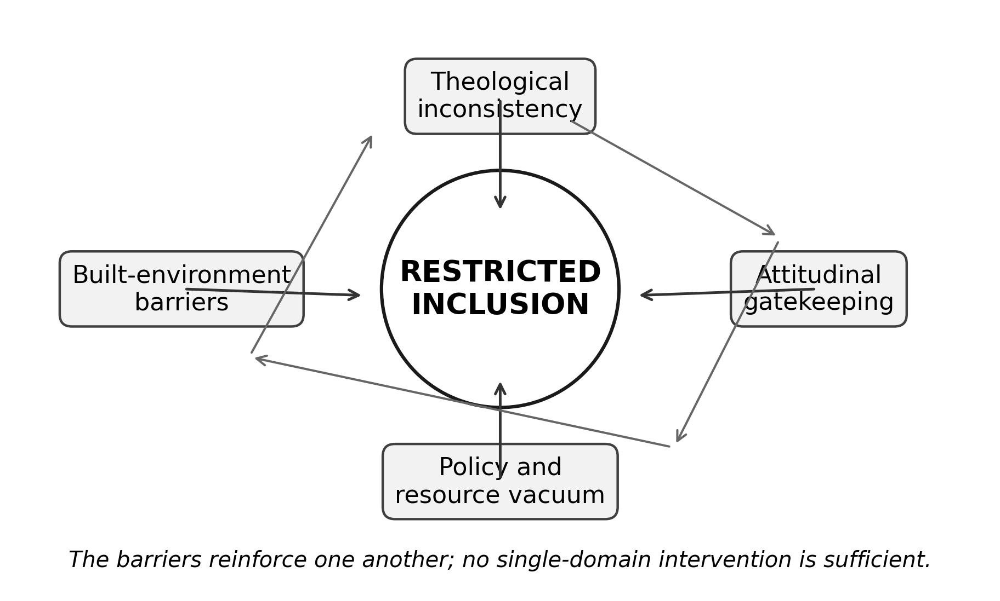
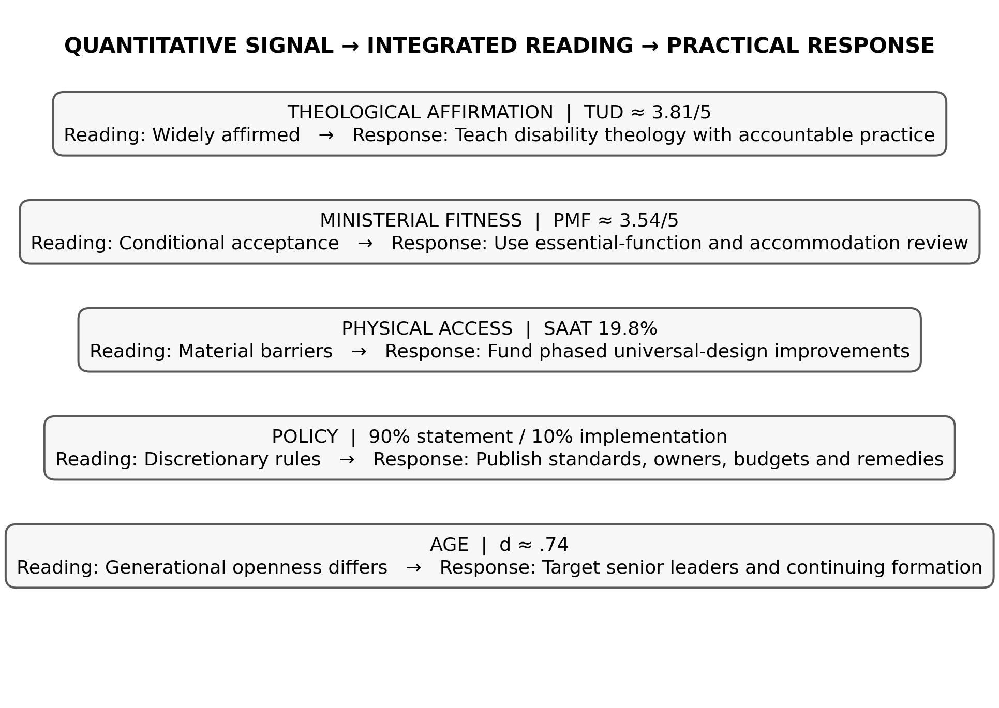

PIONEER PUBLICATION · ACCEPTED ARTICLE · ORIGINAL RESEARCH ARTICLE · SETEHEM: HUMANITIES & SOCIAL SCIENCES × CHRISTIAN THEOLOGY × EDUCATION
Restricted Inclusion as an Institutional System: Mixed-Methods Evidence on Lived Experience, Gatekeeping and Barriers in Anglican Ministerial Formation in Nigeria
UKULE, Peter¹* · NNAJI, Charles Ogundu¹ · KEHINDE, Adeola¹
¹Department of Christian Studies and Religious Communication, University of Abuja, Abuja, Nigeria
Corresponding author: rev.ukulepeter@gmail.com
Article | Volume/Issue | Published | ISSN | DOI |
|---|---|---|---|---|
e015 | 1(1) | August 2026 | Pending assignment | Pending registration |
DOI: Pending registration. This local production copy is not a public version of record until DOI registration and journal-release checks are complete.
Abstract
Background: Disability exclusion in theological education is often discussed as a list of separate barriers. A systems perspective asks how theology, infrastructure, policy, attitudes and placement reinforce one another.Objective: This paper developed an empirically grounded account of “restricted inclusion” by integrating the major quantitative and qualitative findings of a sequential explanatory study of Anglican seminaries in Nigeria.Methods: The parent study combined 175 returned IATES surveys, SAAT accessibility audits and SPAM policy analyses at 10 seminaries in five geopolitical zones with interviews involving 65 current students with physical disabilities, 38 alumni and 28 diocesan leaders, plus six focus groups. This article uses the post-defence joint-display and coding framework to integrate the evidence without introducing new unverified participant quotations.Results: Five signals converged: TUD≈3.81/5 showed broad theological affirmation; PMF≈3.54/5 showed more conditional ministerial recognition; SAAT accessibility was 19.8%; 90% of seminaries had a general non-discrimination statement but only 10% showed systematic implementation; and younger respondents were more willing to accommodate than older respondents (d≈.74). Qualitative integration identified four mutually reinforcing layers: theological inconsistency, built-environment barriers, policy/resource vacuum and attitudinal gatekeeping. Students could be welcomed pastorally while still lacking secure agency in formation and placement.Conclusion: Restricted inclusion is best understood as an institutional system rather than a single prejudiced decision. Effective reform must act simultaneously on theology, access, governance, formation and participation, shifting the institutional logic from discretionary charity to accountable ecclesial participation.
Keywords: restricted inclusion; mixed methods; disability theology; institutional gatekeeping; Anglican seminaries; lived experience; Nigeria
1. Introduction
Institutional exclusion rarely survives because of one rule alone. It persists because different barriers validate one another. If few disabled candidates are admitted, leaders may infer that disability and ministry rarely coincide. That inference can justify low investment in access. Inaccessible buildings then reduce the visibility of disabled seminarians, which further confirms the assumption that they are exceptional. When policy is absent, applicants must negotiate individually with the same gatekeepers whose assumptions shaped the system. This is the institutional cycle captured by the parent study’s concept of “restricted inclusion.”
The concept is intentionally more precise than simple exclusion. The evidence did not describe institutions that rejected every disabled person or denied every inclusive theological claim. Rather, participation was restricted by the terms under which welcome was offered. People could be prayed for, admitted exceptionally, or supported by individual goodwill while still lacking predictable access, authority and institutional rights. The distinction matters because benevolent institutions can reproduce exclusion without understanding themselves as exclusionary.
2. Conceptual framework: from barriers to systems
The social model of disability shows how environments and institutions disable persons by organising participation around a narrow bodily norm. Disability theology adds an ecclesial question: what does that organisation say about the body of Christ, giftedness and divine calling? Practical theology then asks how stated beliefs, actual practices and reform proposals relate. Together these perspectives allow barriers to be studied as an interacting system rather than a list.

Figure 1. The “constellation of exclusion” model: four mutually reinforcing layers of restricted inclusion. Source: Authors’ synthesis from the integrated parent-study findings.
3. Materials and Methods
3.1 Sequential explanatory design
The parent study used a sequential explanatory mixed-methods design. Quantitative evidence first described attitudes, access and policy. Qualitative evidence then examined how those patterns were experienced and interpreted by students, alumni and institutional leaders. The post-defence correction record clarifies that the realised institutional sample comprised 10 seminaries in five geopolitical zones.
3.2 Quantitative and qualitative strands
The quantitative strand included 175 returned IATES questionnaires from 198 distributed, SAAT audits across all 10 seminaries and SPAM policy reviews across the same institutions. The explanatory strand engaged 65 current students with physical disabilities, 38 alumni, 28 diocesan leaders and six focus groups. The verified coding framework organised qualitative evidence around vocation, Scripture, access, admissions, fitness, care, agency, policy, placement and change.
This publication deliberately avoids unverified verbatim quotation. The post-defence audit trail requires any quotation to be traceable to a transcript location, participant code, consent status and interpretive context. Because the publication source available here contains the verified themes and joint display rather than the underlying transcript corpus, this article reports themes and integrated inferences only.
3.3 Integration strategy
Integration used the joint display approach recommended for mixed-methods research: quantitative indicators were placed alongside the qualitative question they raised, the integrated inference and the practical-theological response. The purpose was not to make the qualitative strand “prove” the numerical results, but to explain how material, attitudinal and theological conditions converged or diverged.
4. Integrated Results

Figure 2. Joint display of the principal quantitative signals, integrated interpretations and practical responses. Source: post-defence Appendix Y, redesigned for publication.
Table 1. Integrated evidence for restricted inclusion.
Domain | Quantitative signal | Qualitative/integrated inference | Institutional implication |
|---|---|---|---|
Theological affirmation | TUD≈3.81/5 | Calling generally affirmed, but affirmation did not guarantee access | Disability theology must be connected to practice |
Ministerial fitness | PMF≈3.54/5 | Conditional acceptance remained visible; bodily norms shaped judgments | Define essential ministry functions and accommodation |
Physical access | SAAT 19.8% | Mobility, worship and learning barriers constrained participation | Fund phased universal-design improvements |
Policy | 90% statement / 10% implementation | Rules were often informal or discretionary | Publish standards, owners, budgets and remedies |
Age | d≈.74 | Generational openness was uneven | Target senior leaders and continuing formation |
4.1 Theological inconsistency
The first layer was a gap between inclusive doctrinal affirmation and its institutional consequences. Respondents generally affirmed divine calling and human dignity, yet ministerial recognition was more conditional. This pattern permits a seminary to describe itself as theologically inclusive while retaining bodily assumptions about what a priest, pastor or missionary should be able to look like or do. The result is not explicit theological rejection but selective application.
4.2 Built-environment barriers
The second layer was material. An overall SAAT score of 19.8% meant that the ordinary spaces of formation—entrances, dormitories, sanitation, worship, learning and technology—were not consistently designed for disabled participation. Material barriers have a symbolic effect as well: they communicate which bodies were anticipated when the institution was imagined.
4.3 Policy and resource vacuum
The third layer was procedural. General non-discrimination language was common, but documented implementation was rare. Without admission, academic, financial and field-education procedures, accommodation becomes a negotiation rather than an institutional entitlement. The post-defence integrated inference describes commitment as lacking an owner, budget and remedy.
4.4 Attitudinal gatekeeping and lived experience
The fourth layer was interpersonal and institutional gatekeeping. The verified age effect shows that willingness to accommodate differed substantially between younger and older respondents. Qualitative coding further identified FITNESS, CARE, AGENCY and PLACEMENT as recurrent domains. The integrated account is one in which disabled candidates may be welcomed as recipients of care while still encountering doubt about leadership, authority and deployment. Such a system creates a burden of repeated self-justification: calling is not assessed once but continually re-proven against bodily expectation.
5. Discussion
The principal contribution of the systems interpretation is to explain why isolated reforms often fail. A ramp does not produce inclusion if admissions remain discretionary; a policy does not produce inclusion if leaders retain stereotyped definitions of ministerial fitness; a disability-theology course does not produce inclusion if students cannot access the dormitory or chapel. The barriers are mutually reinforcing, so reform must be coordinated.
This finding aligns with disability-justice literature that moves beyond accommodation as an individual transaction. Barton (2021) argues that theological education should be designed around access as justice, while Swinton (2012) distinguishes belonging from formal inclusion. McMahon-Panther and Bornman (2025) similarly show that Christian compassion can coexist with continued marginalisation when justice, agency and participation are not redistributed.
The ecclesiological implication is substantial. If the church understands itself as one body composed of differentiated members, then disabled participation is not an optional enrichment programme. It is part of the church’s account of what the body is. “Restricted inclusion” becomes theologically unstable because it affirms membership while controlling the conditions under which members may exercise gifts and authority.
5.1 From discretionary charity to accountable participation
A more defensible institutional model has five features. First, vocation is discerned through theologically and professionally explicit criteria. Second, access is designed and audited rather than assumed. Third, accommodation is governed by a published process. Fourth, disabled students and alumni participate in decisions that affect them. Fifth, placement and leadership are evaluated by gifts, essential functions and reasonable support rather than by bodily stereotype. These features move the seminary from discretionary charity toward accountable participation.
5.2 Responsibility without diffusion
The parent study’s five-year implementation matrix appropriately distributes responsibility. Church regulatory structures set standards; bishops and seminary councils govern admissions, budgets and placement; seminaries operationalise access and pedagogy; government and the National Commission for Persons with Disabilities enforce public obligations; donors may support capital works; and disabled persons’ organisations, students and alumni participate in design and monitoring. The important governance principle is that shared responsibility must still have named owners and measurable indicators.
6. Limitations
This article synthesises verified aggregate quantitative findings and the thesis’s audited qualitative themes. It does not reproduce the full transcript corpus, institution-specific case profiles or a respondent-level statistical matrix. Accordingly, it makes no new prevalence claim and no new causal claim. The value of the paper lies in integration: showing how already verified strands fit together into an institutional model.
7. Conclusion
The evidence supports the concept of restricted inclusion as an institutional system. The studied seminaries could affirm disability-inclusive theology and still reproduce material, procedural and attitudinal conditions that limited participation. Those conditions reinforced one another. A serious reform agenda must therefore be simultaneous: reframe ministerial fitness, redesign access, codify accommodation, redistribute agency and hold leaders accountable for implementation. The destination is not merely a seminary that admits disabled persons, but one in which their formation and leadership are expected parts of the ordinary life of the church.
Declarations
Table. Publication declarations and research-integrity information.
Declaration | Statement |
|---|---|
Study provenance | Mixed-methods integration paper derived from the post-defence harmonised Ph.D. thesis of Peter Ukule. |
Qualitative reporting | No verbatim participant quotation is reproduced because the publication source used here contains verified themes and audit rules rather than the underlying transcript corpus. |
Confidentiality | Institutional and participant findings are reported at aggregate level. |
Authorship | Peter Ukule led the doctoral research; Charles Ogundu Nnaji and Adeola Kehinde supervised the study and are co-authors of this focused article. |
References
Barton, S. J. (2021). Access and disability justice in theological education. Journal of Disability & Religion, 25(3), 279–295.
Braun, V., & Clarke, V. (2022). Thematic analysis: A practical guide. SAGE.
Carter, E. W., et al. (2023). Addressing accessibility within the church: Perspectives of people with disabilities. Journal of Religion and Health, 62(4), 2474–2495.
Creswell, J. W., & Creswell, J. D. (2022). Research design: Qualitative, quantitative, and mixed methods approaches (6th ed.). SAGE.
Degener, T. (2016). Disability in a human rights context. Laws, 5(3), 1–24.
Eiesland, N. (1994). The disabled God: Toward a liberatory theology of disability. Abingdon Press.
Hauerwas, S. (2004). Suffering presence: Theological reflections on medicine, the mentally handicapped, and the church. University of Notre Dame Press.
McMahon-Panther, G., & Bornman, J. (2025). Persons with disabilities in the Christian Church: A scoping review on the impact of expressions of compassion and justice on their inclusion and participation. Journal of Disability & Religion, 29(1), 81–108.
Swinton, J. (2012). From inclusion to belonging: A practical theology of community, disability and humanness. Journal of Religion, Disability & Health, 16(2), 172–190.
Tagwirei, K. (2024). Enabling abilities in disabilities: Developing differently abled Christian leadership in Africa. Theologia Viatorum, 48(1), 252.
World Council of Churches. (2003). A church of all and for all: An interim statement. WCC Publications.
Yong, A. (2011). The Bible, disability, and the church: A new vision of the people of God. Eerdmans.
Mertens, D. M. (2021). Transformative research methods to increase social impact for vulnerable groups and cultural minorities. International Journal of Qualitative Methods, 20, 1–15.
Perez, A., et al. (2023). Advancing quality standards in mixed methods research: Extending the legitimation typology. Journal of Mixed Methods Research, 17(1), 29–50.
Swinton, J., & Mowat, H. (2021). Practical theology and qualitative research (2nd ed.). SCM Press.
Publication Record
Article metadata.
Field | Record |
|---|---|
Article identifier | e015 |
Manuscript category | Original Research Article |
Parent study | Ukule, Peter. Ph.D. in Christian Theology, University of Abuja, February 2026; post-defence harmonised copy. |
Journal | CHIATECH JOURNAL SETEHEM, Volume 1, Issue 1 |
Publication month | August 2026 |